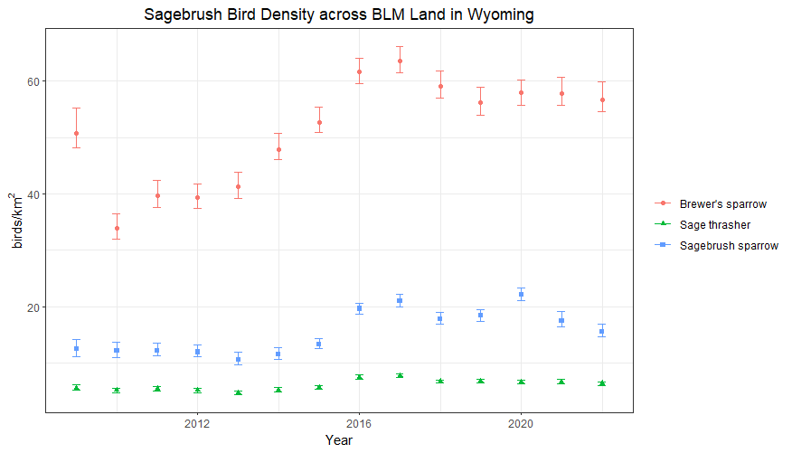
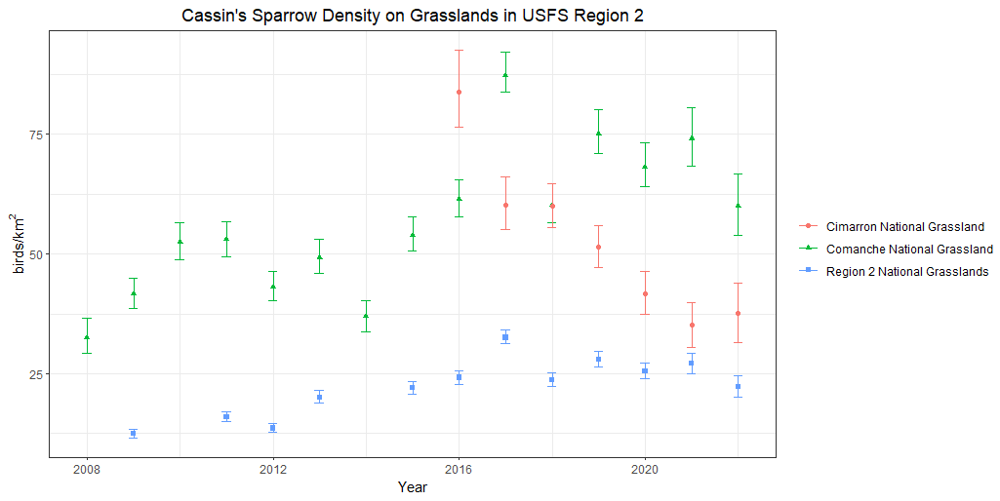

20 Special Feature - Population Trends
Using IMBCR Trend Estimates to Track Species of Concern
Long-term, rigorous monitoring provides valuable information on population status, allowing managers and biologists to focus limited resources on species of greatest concern. Monitoring populations at local and regional scales also facilitates a mechanistic understanding of how local and regional processes may interact and affect populations (Hewett et al. 2007, Pavlacky et al. 2017). Here we provide a few examples demonstrating the use of IMBCR population trends for tracking the status of designated species of concern and determining where specific populations may require management or conservation efforts.
Trend estimates can be found in this Google Drive folder. Please see the associated Read Me document for an explanation of columns in the trend estimates spreadsheet. If you cannot access Google Drive, please contact Jennifer Timmer for a copy of the data.
Wyoming BLM
We have been monitoring birds across the state of Wyoming since 2009, including all BLM land. Currently, Brewer’s sparrow, sage thrasher, and sagebrush sparrow are listed sensitive species for the Wyoming BLM. Due to the loss and degradation of sagebrush rangelands over the last century, many avian species associated with this biome have also declined and are now of conservation concern (Knick and Rotenberry 2002).
Throughout all BLM land in Wyoming, populations for these three species are stable-to-increasing across the monitoring period (2009-2022; Figure 20.1), illustrating the overall value of these publicly managed lands for sagebrush birds (Table 3).

Within several specific BLM field offices, however, populations for these three species are decreasing and may require specific management or conservation efforts to restore sagebrush rangelands. For example, the Brewer’s sparrow population is decreasing approximately 6% each year in the Lander Field Office, the sagebrush sparrow sparrow population is decreasing 19% per year in the Lander Field Office, and the sage thrasher population in the Worland Field Office is decreasing 5% each year (Table 3).
Table 3. Population trend estimates for sensitive sagebrush bird species within select Wyoming Bureau of Land Management strata from the IMBCR program.
Bird Conservation Region 17
We have also monitored across the Badlands and Prairies Bird Conservation Region (BCR 17) since 2009. Grassland birds are among the fastest declining group of birds in North America (Rosenberg et al. 2019, NABCI 2022). Grassland prairie converted for cropland or residential development threatens these populations on both the breeding and wintering grounds (NABCI 2016), and the loss may be as high as 700 million breeding individuals over the past 50 years (Rosenberg et al. 2019).
For the Northern Great Plains Joint Venture, the chestnut-collared longspur and Sprague’s pipit are focal species of conservation concern, and are also declining across this region (17% each year for chestnut-collared longspur and 26% each year for Sprague’s pipit; Table 4). However, if we look at specific management units in BCR17, local populations for these species are actually increasing: chestnut-collared longspur by 4% each year on Cedar River National Grassland in North Dakota and Sprague’s pipit by 17% each year on Grand River National Grassland in South Dakota (Table 4).
Table 4. Population trend estimates for two grassland bird species within Bird Conservation Region 17 from the IMBCR program.
Grassland birds often show low site fidelity from year-to-year as they track suitable breeding sites (Cody 1985), emphasizing the need for regional monitoring to identify these important breeding locations and to track population change over time. In addition, the monitoring data serve as a logical place to form hypotheses for observed population fluctuations and predictions about bird response to drivers of change (Pavlacky et al. 2017). For example, we could model abiotic and biotic habitat features relevant for grassland birds to understand population discrepancies between regional and local scales.
USFS Rocky Mountain Region
The USFS Rocky Mountain Region has been involved in IMBCR since the beginning in 2008, so we now have 15 years of monitoring data across this region. Cassin’s sparrow and olive-sided flycatcher are designated sensitive species for the Rocky Mountain Region because of concern about the population viability of these species on USFS land within the region (USFS Manual 2670.5).
Cassin’s sparrows are actually increasing across national grasslands collectively in this region (5% each year; Figure 20.2), and olive-sided flycatchers are also increasing about 4% each year across national forests in the region (Table 5). It’s important to look at trends within specific units, however, because populations may show variable trends locally and could warrant a designation as Species of Conservation Concern (36 CFR § 219.19).
Table 5. Population trend estimates for sensitive species within select U.S. Forest Service National Grassland and National Forest strata from the IMBCR program.
For instance, olive-sided flycatchers are decreasing 19% each year on the Arapaho and Roosevelt National Forests, but increasing 35% per year on the Shoshone National Forest (Table 5). Populations of western forest species may be stable overall, but forests with a greater departure from historical conditions shaped by frequent fire activity could be hotspots for avian population declines (NABCI 2022).
Cassin’s sparrows are decreasing 11% each year on Cimarron National Grassland, but increasing 3% each year on Comanche National Grassland (Table 5; Figure 20.2). Although many grassland birds breed on privately owned land, publicly managed grasslands also provide critical breeding habitat.
